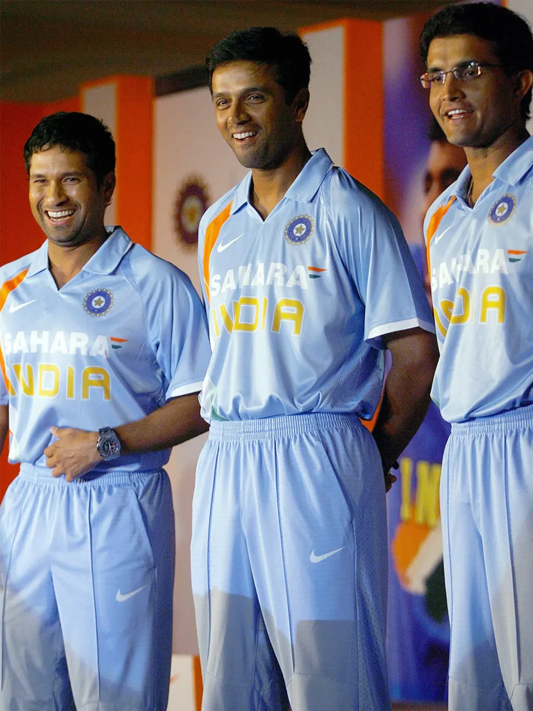
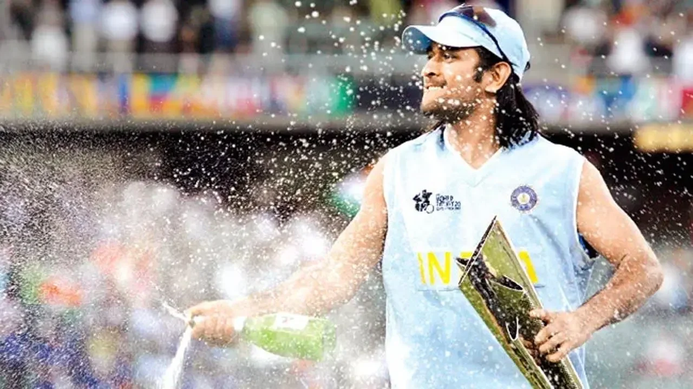

The year was 2007. Indian cricket was burning.
The ODI World Cup in the Caribbean had ended in a disastrous group-stage exit. Effigies were being burnt on the streets of Mumbai and Kolkata. Greg Chappell had resigned. The dressing room was fractured into factions, and the BCCI was desperate to hit the reset button.
Amidst this chaos, the inaugural T20 World Cup was approaching. The BCCI didn't even take T20 cricket seriously. It was seen as a gimmick, a "hit and giggle" format that nobody thought would last. But India had to send a team.
What happened behind closed doors in the weeks leading up to that tournament is a story of sacrifice, ego clashes, and one massive gamble that changed the geography of world cricket forever.
The Holy Trinity Steps Down
The initial plan was simple: send the strongest team to South Africa. That meant Rahul Dravid as captain, with Sachin Tendulkar and Sourav Ganguly as the core.
But the seniors had a secret meeting during the England tour. Tendulkar, Dravid, and Ganguly discussed the nature of T20 cricket over a long dinner. They realized that this format belonged to athletes who could dive around the field, hit from ball one, and didn't carry the baggage of traditional cricket thinking.
In an unprecedented move, all three voluntarily pulled out of the T20 World Cup. They told the BCCI: "Send a young team. Let them play freely."
The BCCI was shocked, but they agreed. The immediate question then became: Who will lead this young team?

Why Not Yuvraj or Sehwag?
If you looked at the Indian squad in 2007, the natural successors were obvious.
Virender Sehwag was the most destructive batsman in the world and had vice-captaincy experience. Yuvraj Singh was the golden boy, the poster child for modern, aggressive Indian cricket.
Many within the BCCI strongly pushed for Yuvraj Singh. He had the swagger, he was a brilliant fielder, and he was the face of Indian youth. According to several insider accounts, Yuvraj himself expected the call.
So, how did a 26-year-old wicketkeeper from Ranchi, who had debuted just two and a half years ago, bypass the entire hierarchy?
When MS Dhoni made his ODI debut in December 2004, he was run out for a duck. His second match? Another duck. It took him five innings to score his first run in international cricket. Two years later, India's biggest legends were recommending him for captaincy.
The Sachin and Ganguly Intervention
The BCCI President at the time, Sharad Pawar, asked Sachin Tendulkar to take over the captaincy after Dravid stepped down. Tendulkar flatly refused.
Instead, Tendulkar gave Pawar a name that raised eyebrows across Indian cricket: Mahendra Singh Dhoni.
But Tendulkar wasn't the only one. Sourav Ganguly, the man who had built the aggressive core of Team India, had been quietly observing Dhoni for two years.
Ganguly saw something in Dhoni that others missed. While the world saw a long-haired swashbuckler who hit the ball violently, Ganguly saw a deeply analytical brain. During matches, when Ganguly or Dravid fielded at slip, Dhoni (as the wicketkeeper) would constantly suggest field changes. He noticed bowling angles that slip fielders couldn't see. He noticed bowler fatigue before the bowler himself did. He read the game better than anyone else on the field.
Ganguly had already sacrificed his beloved No. 3 batting position in 2005 to let Dhoni bat higher up against Pakistan (where Dhoni scored his famous 148). Now, Ganguly added his weight to Tendulkar's recommendation.
"He is calm. He doesn't panic. And he understands the game from behind the stumps," was the consensus among the seniors.
Rahul Dravid, who had just relinquished the ODI captaincy after the World Cup debacle, privately agreed. He told close associates that Dhoni's ability to detach emotionally from high-pressure situations was something he hadn't seen in any Indian cricketer before.
The Backlash and Angry Seniors
Not everyone in the Indian dressing room was happy.
When the announcement was made that MS Dhoni would lead India in the 2007 T20 World Cup, a subtle wave of resentment swept through the mid-level seniors. Players who had debuted before Dhoni, who felt they had "waited their turn" in the traditional hierarchy, suddenly found themselves taking orders from a junior.

Yuvraj Singh, while maintaining a strong friendship with Dhoni, admitted years later in interviews that he was genuinely surprised he wasn't picked for the captaincy. The two shared a dressing room, a friendship, and an IPL team later. But that initial sting of being bypassed by a junior stayed with Yuvraj for a while.
Other players felt that Dhoni's communication style was too blunt. He didn't sugarcoat feedback. If a bowler was bowling badly, Dhoni would tell him exactly that, without the usual diplomatic phrases that senior Indian captains had always used. Some players found this refreshing. Others found it jarring.
But Dhoni didn't care about the politics. He went to South Africa with a team of youngsters, stripped away the fear of failure, and asked them to treat the World Cup like a street cricket tournament. The kind you play in your colony after school, where losing means nothing and winning means everything.
"I told the boys: there's nothing to lose. Nobody expects us to win. So let's just go and enjoy ourselves."MS Dhoni, on his approach to the 2007 T20 World Cup
The Rest is History
You know what happened next. Bowl-outs against Pakistan in the group stage. Yuvraj Singh's six sixes against Stuart Broad. Robin Uthappa and Rohit Sharma emerging as genuine match-winners. Joginder Sharma bowling that unforgettable final over against Pakistan in the final.
India won the T20 World Cup, and MS Dhoni returned to Mumbai not just as a captain, but as a demigod. The man who had scored two ducks in his first two ODIs was now holding the trophy that launched a billion-dollar T20 revolution.
The decision made by Tendulkar, Dravid, and Ganguly in a quiet room during the England tour remains one of the greatest administrative masterstrokes in cricket history. They sacrificed their own egos, bypassed the obvious candidates, and handed the keys of Indian cricket to a man who would go on to win all three ICC trophies.
What followed that September night in Johannesburg reshaped Indian cricket permanently. The IPL was born within months. T20 cricket became the most profitable sporting product in the world. And MS Dhoni became the most successful captain India has ever produced, leading the team to the 2011 World Cup victory and the 2013 Champions Trophy.
Sourav Ganguly taught India how to fight. MS Dhoni taught India how to win. And it all started because three legends had the courage to step aside and bet on a 26-year-old kid from Ranchi who nobody else believed was ready.
That bet didn't just change Indian cricket. It changed cricket itself.
📷 Image Credits: Images via BCCI/ICC
Frequently Asked Questions
Who made MS Dhoni the captain of India?
MS Dhoni was officially appointed by the BCCI, but the strongest recommendations came from senior players Sachin Tendulkar and Rahul Dravid, with vocal backing from Sourav Ganguly. They observed his tactical brilliance and emotional composure from behind the stumps during matches.
Why did Sachin Tendulkar refuse captaincy in 2007?
Sachin Tendulkar refused the captaincy because he wanted to focus entirely on his batting during the latter half of his career. He also believed that the new T20 format required a younger leader with a fresh approach who could connect with the younger players in the squad.
Did Sourav Ganguly support MS Dhoni as captain?
Yes, Sourav Ganguly was MS Dhoni's biggest early supporter. In 2005, Ganguly famously gave up his No. 3 batting position against Pakistan to promote Dhoni, which resulted in Dhoni's breakout 148-run knock that announced him on the world stage.
Which senior players opted out of the 2007 T20 World Cup?
Sachin Tendulkar, Sourav Ganguly, and Rahul Dravid voluntarily opted out of the inaugural T20 World Cup, believing the format was meant for youngsters. This unprecedented decision paved the way for MS Dhoni to lead a young Indian squad to a historic title.
How many ICC trophies did MS Dhoni win as captain?
MS Dhoni is the only captain in cricket history to win all three major ICC trophies: the 2007 T20 World Cup in South Africa, the 2011 ODI World Cup at home in India, and the 2013 Champions Trophy in England.